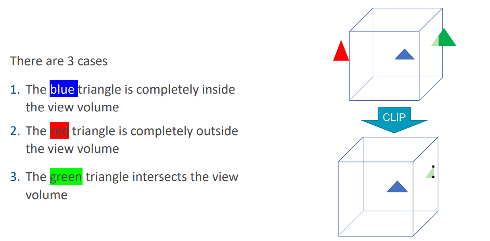
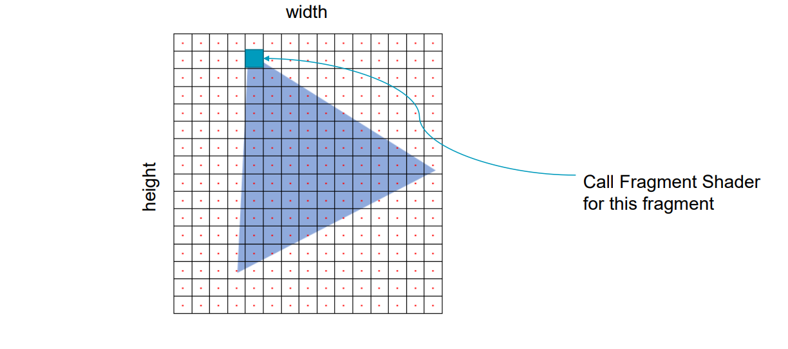
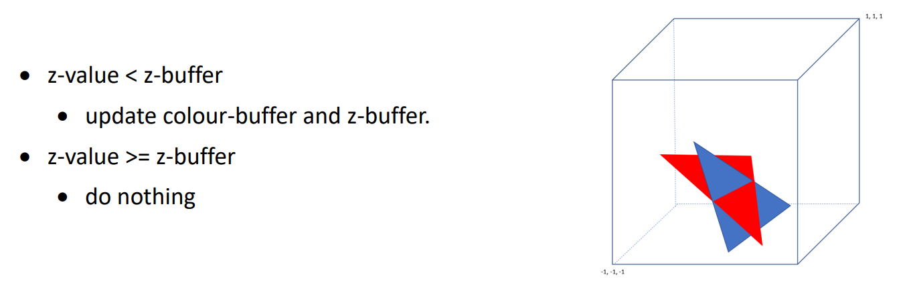

渲染管线流程
1. 应用层
C程序在CPU上运行，模拟相机和场景中的对象，一但模拟完成，应用程序会将顶点数据从CPU传输到GPU。
2. 顶点处理
2.1. 顶点着色器（Vertex Shader）阶段

顶点着色器阶段负责将顶点从模型空间（Model Space）转换到最终用于光栅化的裁剪空间（Clip Space）。这个过程通常分为三个主要步骤：
模型矩阵（Model Matrix）
将顶点从模型空间（Model Space）转换到世界空间（World Space）。模型空间是对象自身的局部坐标系，世界空间则是场景的全局坐标系。
视图矩阵（View Matrix）
将顶点从世界空间转换到视图空间（View Space），也称为摄像机空间。此转换以摄像机为中心，将场景中的对象映射到一个以摄像机为基准的坐标系统。
投影矩阵（Projection Matrix）
将顶点从视图空间转换到裁剪空间（Clip Space）。投影矩阵可以是透视投影或正交投影，负责将三维场景投影到二维平面。
最终结果是，顶点从三维的模型空间通过一系列变换被映射到屏幕的二维空间。
2.2 顶点后处理（Vertex Post-Processing）阶段



3. 光栅化（Rasterization）阶段
在光栅化阶段，图元（如三角形）会被转换为屏幕上的像素或片元。光栅化将二维空间中的几何图元映射到屏幕坐标，生成片元，这些片元对应屏幕上的像素点。

4. 像素处理（Pixel Processing）阶段
4.1片元着色器（Fragment Shader）
片元着色器是处理每个像素的着色计算的阶段。在这个阶段，片元的颜色、纹理坐标和深度值等会根据场景中的光照和材质信息来进行计算。

4.2合并（Merging）
合并阶段发生在片元着色器之后，是渲染管线的最后一步。在这个阶段，已经处理过的片元会和现有的帧缓冲数据进行合并，这包括深度测试（Depth Test）、颜色缓冲区（Color Buffer）以及混合（Blending）等。
合并的目的是确保正确的片元被绘制到屏幕上，较近的物体会覆盖较远的物体，透明物体会和背景颜色进行混合。
